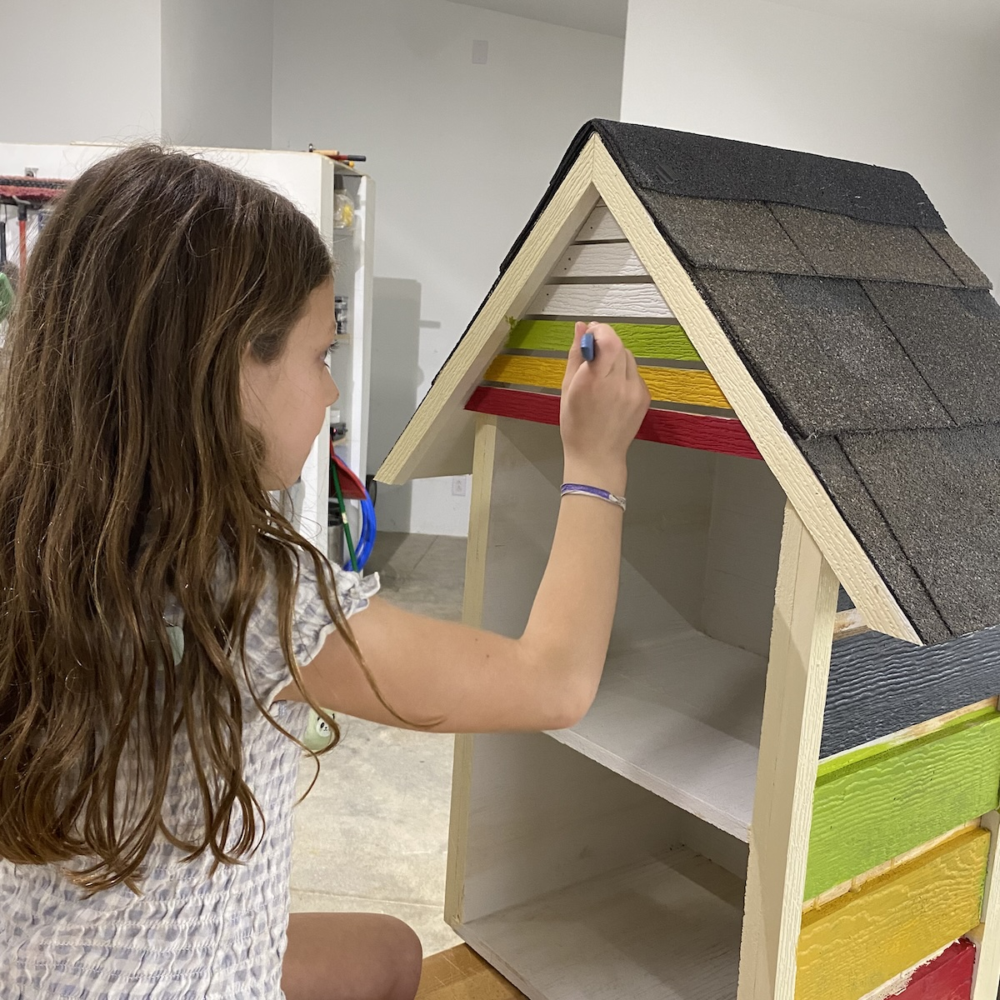
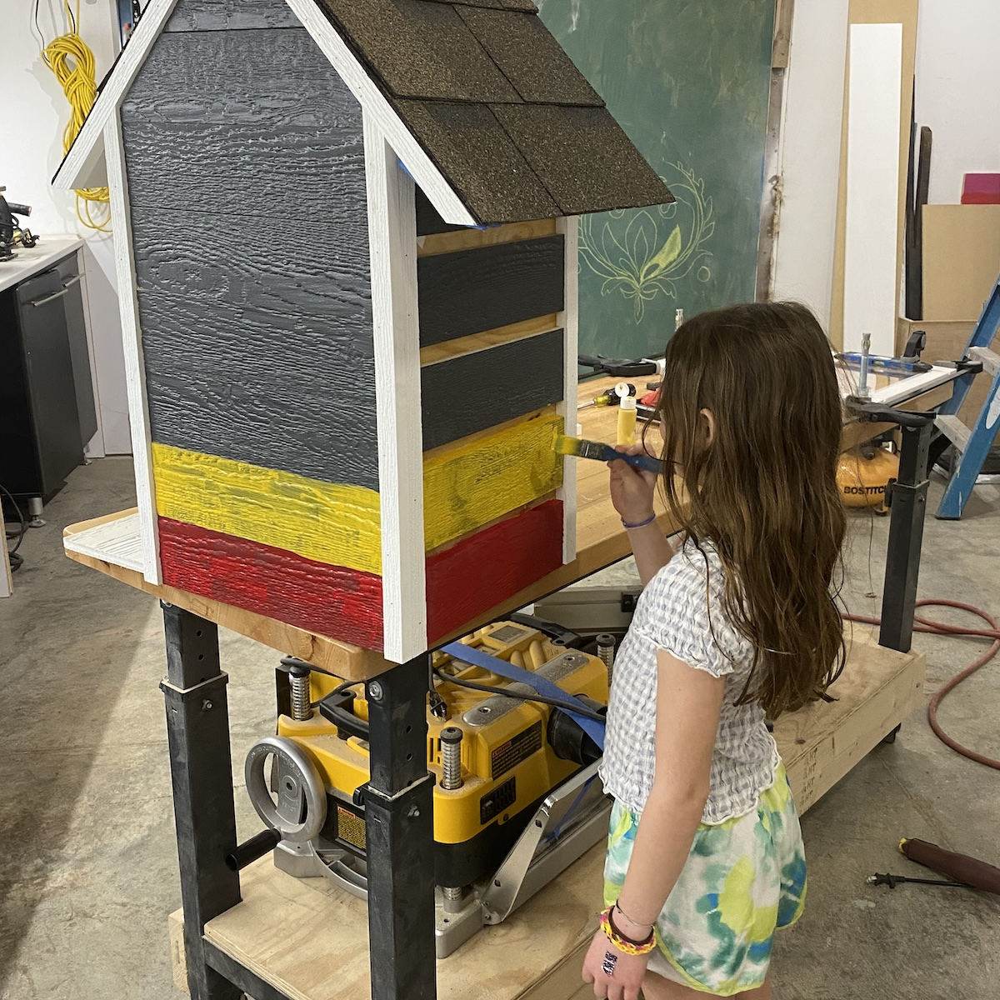

Trois Sœurs is Jane, Ruby, and Lucy. Three sisters who build things with their parents out of a little shop in Kansas City. Little libraries, mostly. The kind that live outside, get rained on, and slowly become part of wherever they land.
This one was built for the girls' school, Académie Lafayette. It sits along the path they walk every day with the dog. We built it from scrap lumber left over from another project. A school is a place where leftover things find new uses too. Felt right.
It became part of the routine pretty quickly. A quick stop, a peek inside, sometimes a small pile of kids blocking the sidewalk trying to see what's in there.
Books pass through, but so do little sculptures and things kids made themselves. That's our favorite part: when the space stops being ours and starts being theirs.
The girls won't be at this school forever. We hope they come back someday and find it still standing, still full of things.
And if it's not, we'll build another one.
See all our little libraries »Leave a note or share a memory. We'd love to know what this library means to you.

